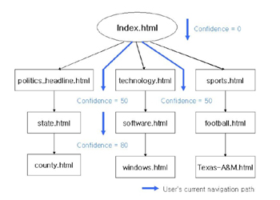
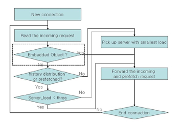
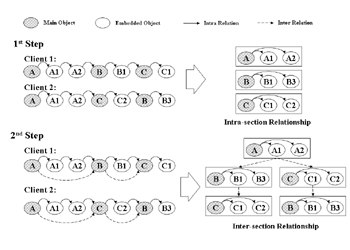
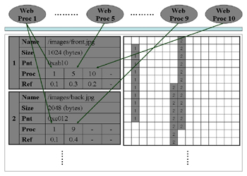

Web Cluster System
High Performance Computing Laboratory
Cluster systems are being increasingly used in the web server management, file distribution and database
transactions. The main reason for the large-scale deployment of the cluster systems is their load sharing
and high-performance capabilities. The overall delay incurred by the end-user is the sum of network-link
delay, routing delay, delay accrued during address resolution and finally the web-server service delay.
It has been observed that web servers contribute to approximately 40% of the overall delay, and this
delay is likely to grow with the increasing use of dynamic contents. The delay incurred at a web server
consists of the processing time and data retrieval time. Cluster-based web servers incur an additional
delay in analyzing the incoming request and forwarding the request to one of the back-end servers. Thus,
the delay at the web server is a critical component which has to be reduced to achieve a better web-server
performance.
| Web Cluster Systems |
 |
Proactive Request Distribution
Widely adopted, distributor-based systems forward user requests to a balanced set of waiting servers
in complete transparency to the users. The policy employed in forwarding requests from the front-end
distributor to the backend servers plays an important role in the overall system performance. The
locality-aware request distribution (LARD) scheme improves the system response time by having the
requests serviced by the web servers that contain the data in their cache.
We propose a proactive request distribution (PRORD) to apply an intelligent proactive-distribution
at the front-end and complementary pre-fetching at the back-end server nodes to acquire the data into
their caches. The pre-fetching scheme fetches the web pages in advance into the memory based on a
confidence value of the web page, which is predicted by the proactive distribution scheme. The proactive
distribution depends on both online and offline analysis of the website log files, which capture user
navigation patterns on the website. Designed to work with the prevailing web technologies, such as HTTP
1.1, our scheme aims to provide reduced response time to the users.
| Proactive Request Distribution |
|  |
 |
| Building the Confidence Value |
Request Distribution |
Adaptive Prefetching Scheme
The main memory management has been a critical issue to provide high performance in web cluster systems.
To overcome the performance gap between processors and disks, many prefetch schemes have been proposed as
memory management in web cluster system. However, ineffient prefetch schemes can degrade the performance
of the web cluster system. Dynamic access patterns due to web cache mechanism in proxy servers increase
misprediction to waste the I/O bandwidth and available memory. Too aggressive prefetch schemes incur the
shortage of available memory and performance degradation. Furthermore, modern web framework including
persistent HTTP makes the problem more challenging by draining the available memory space with multiple
connections from a client and web processes management in prefork mode. Therefore, we attempt to design
an adaptive web prefetch scheme by predicting memory status more accurately and dynamically.
First, we design Double Prediction-by-Partial-Match (P.P.M.) Maare consistetch Scheme (DPS) that can be
adapted to the modern web framework. Second, we propose Adaptive Rate Controller (ARC) to determine the
prefetch rate depending on the memory status dynamically. Finally, we suggest Memory Aware Request
Distribution (MARD) that distributes requests based on the available web processes and memory. For evaluating
the prefetch gain in a server node, we implement an Apache module in Linux. In addition, we build a simulator
for verifying our scheme with cluster environment.
| Prefetch Scheme in Web Cluster Systems |
|  |
 |
| Double P.P.M. Scheme |
Memory Management |
Papers
- "Adaptive Prefetching Scheme Using Web Log Mining in Cluster-based Web Systems" to appear in ICWS 2009.
-
"A PROactive Request Distribution(PRORD) Using Web Log Mining in Cluster-Based Web Server," in Proceedings of the 2006 International Conference on Parallel Processing (ICPP) , Columbus, 2006. (pdf)
-
"On Improving Performance and Conserving Power in Cluster-based Web Servers," in Proceedings of the 2005 International Conference on Web Services(ICWS), pp. 799-800, Orlanddo, USA, 2005. (pdf)
|